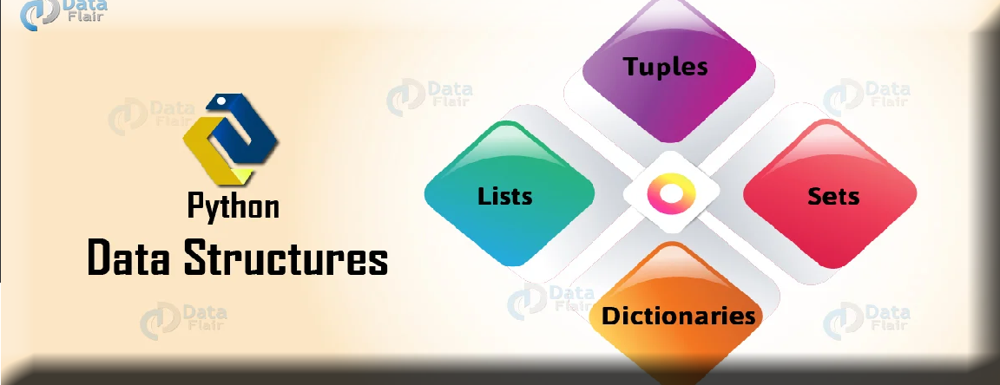

LECTURE - 08 DICTIONARY AND SET
Dictionary
Dictionary คืออะไร และการประกาศและใช้งานสำหรับเก็บข้อมูลในการเขียนโปรแกรม นอกจากนี้ เรายังจะพูดถึงการใช้งานเมธอดและ built-in functions ของ Dictionary และตัวอย่างการใช้งานกับการเขียนโปรแกรมในรูปแบบต่างๆ ในภาษา Python
Dictionary คือประเภทข้อมูลที่เก็บข้อมูลในรูปแบบคู่ของ Key และ Value โดยที่ Key ใช้สำหรับเป็น Index ในการเข้าถึงข้อมูลและ Value เป็นค่าข้อมูลที่สอดคล้องกับ Key ของมัน การเข้าถึงข้อมูลใน Dictionary นั้นรวดเร็วเพราะว่าข้อมูลได้ถูกทำ Index ไว้อัตโนมัติโดยใช้ Key นอกจากนี้ Dictionary ยังมีเมธอดและฟังก์ชันอำนวยความสะดวกสำหรับการทำงานทั่วไป
การประกาศ Dictionary
ในการใช้งาน Dictionary เรามักจะใช้เก็บข้อมูลที่สามารถใช้บางอย่างที่สามารถจำแนกข้อมูลออกจากกันได้ โดยกำหนดให้สิ่งนั้นเป็น Key ในการประกาศ Dictionary สมาชิกของมันจะอยู่ภายในวงเล็บปีกกา {} มาดูตัวอย่างในการประกาศ Dictionary ในภาษา Python
scores = {'james': 1828, 'thomas': 3628, 'danny': 9310}
scores['bobby'] = 4401
numbers = {1: 'One', 2: 'Two', 3: 'Three'}
print(scores)
print(numbers)ในตัวอย่าง เราได้ประกาศตัวแปร Dictionary ที่มีชื่อว่า scores สำหรับเก็บคะแนนของแต่ละคนโดยใช้ชื่อเป็น Key และค่าของมันก็คือคะแนน สมาชิกของ Dictionary แต่ละตัวจะถูกกำหนดในรูปแบบ key: value และคั่นสมาชิกแต่ละตัวด้วยเครื่องหมายคอมมา เราได้กำหนดค่าเริ่มต้นสามค่าให้กับ Dictionary และสามารถกำหนดค่าให้กับ Dictionary ในรูปแบบ scores['bobby'] ได้หลังจากที่ตัวแปรถูกสร้างแล้ว สังเกตว่าเราสามารถใช้ Key เป็น String หรือประเภทข้อมูลอื่นๆ ได้ ต่อมาตัวแปร numbers เป็น Dictionary ที่มี Key เป็นตัวเลข
{'james': 1828, 'thomas': 3628, 'danny': 9310, 'bobby': 4401}
{1: 'One', 2: 'Two', 3: 'Three'}
นี่เป็นผลลัพธ์การทำงานของโปรแกรม ในการเข้าถึงข้อมูลภายใน Dictionary เพื่ออ่านค่าและอัพเดทข้อมูล
การเข้าถึงข้อมูลภายใน Dictionary
หลังจากที่เราได้ประกาศ Dictionary ไปแล้ว ต่อไปจะเป็นการเข้าถึงข้อมูลเพื่ออ่านและอัพเดทข้อมูลโดยผ่านทาง Key ของมัน มาดูตัวอย่างการเข้าถึงข้อมูลใน Dictionary
scores = {'james': 1828, 'thomas': 3628, 'danny': 9310, 'bobby': 4401}
# display data
print('james =>', scores['james'])
print('thomas =>', scores['thomas'])
print('danny =>', scores['danny'])
print('bobby =>', scores['bobby'])
# update data
scores['james'] = scores['james'] + 1000
scores['thomas'] = 100
print('james =>', scores['james'])
print('thomas =>', scores['thomas'])
ในตัวอย่าง เรามีตัวแปร scores สำหรับเก็บคะแนนของผู้เล่นโดยชื่อเป็น Key ของ Dictionary ในการเข้าถึงข้อมูลนั้นจะใช้ Key ของมัน ในส่วนแรกเป็นการเข้าถึงข้อมูลภายใน Dictionary เพื่อแสดงผลคะแนนของแต่ละ Key ออกมาทางหน้าจอ ต่อมาเป็นการอัพเดทข้อมูลใน Dictionary โดยเราได้เพิ่มค่าให้กับ Key 'james' ขึ้นไปอีก 1000 และกำหนดค่าให้กับ Key 'thomas' เป็น 100 และแสดงผลอีกครั้ง
james => 1828
thomas => 3628
danny => 9310
bobby => 4401
james => 2828
thomas => 100
นี่เป็นผลลัพธ์การทำงานของโปรแกรม ในการเข้าถึงข้อมูลภายใน Dictionary เพื่ออ่านค่าและอัพเดทข้อมูล
การอ่านค่าใน Dictionary ด้วยคำสั่ง For loop
คำสั่ง For loop นั้นเป็นคำสั่งที่ยืดหยุ่นและสามารถใช้งานได้อย่างหลากหลาย ในการอ่านค่าใน Dictionary นั้นเราสามารถใช้ For loop เพื่อวนอ่านค่าทั้ง Key และ Values ใน Dictionary ได้ มาดูตัวอย่างของโปรแกรม
countries = {'de': 'Germany', 'ua': 'Ukraine',
'th': 'Thailand', 'nl': 'Netherlands'}
for k, v in countries.items():
print(k, v)
# iterate through keys
print('Key:', end = ' ')
for k in countries.keys():
print(k, end = ' ')
# iterate through values
print('\nValue:', end = ' ')
for v in countries.values():
print(v, end = ' ')
ในตัวอย่าง เป็นการใช้งานคำสั่ง For loop วนอ่านค่าใน Dictionary ซึ่งมี 3 loop ด้วยกัน ในลูปแรกเป็นการอ่านค่าแบบ Key และ Value ในแต่ละรอบของการทำงานเราเอาข้อมูลใน Dictionary ด้วยเมธอด items() ซึ่งจะส่งค่ากลับเป็น Key และ Value กับมาและโหลดใส่ในตัวแปร k และ v ตามลำดับ
ในลูปที่สอง เป็นการวนอ่าน Key ทั้งหมดภายใน Dictionary โดยเมธอด keys() จะส่งค่ากลับเป็น List ของ Key ทั้งหมดและโหลดใส่ในตัวแปร k แต่ละรอบของลูป และในลูปสุดท้ายนั้นเป็นการอ่าน Value ทั้งหมด และเมธอด values() เพื่อรับค่าของ Value ทั้งหมดมาและใส่ในตัวแปร v ในแต่ละรอบของลูป
de Germany
ua Ukraine
th Thailand
nl Netherlands
Key: de ua th nl
Value: Germany Ukraine Thailand Netherlands
นี่เป็นผลลัพธ์การทำงานของโปรแกรม ในการใช้คำสั่ง For loop เพื่ออ่านข้อมูลใน Dictionary ในภาษา Python
Python Dictionary methods
Dictionary มีเมธอดที่ให้คุณสามารถทำงานกับมันได้ง่ายขึ้น โดยส่วนมากแล้วมักจะเป็นเมธอดในการอัพเดทและรับค่าข้อมูลภายใน Dictionary ต่อไปมาดูตัวอย่างการใช้งานเมธอดของ Dictionary ในภาษา Python
countries = {'de': 'Germany', 'ua': 'Ukraine',
'th': 'Thailand', 'nl': 'Netherlands'}
print(countries.keys())
print(countries.values())
print(countries.get('de')) # equal to countries['de']
countries.setdefault('tr', 'Turkey')
print(countries.popitem())
print(countries.popitem())
print(countries.items())ในตัวอย่าง เป็นโปรแกรมในการใช้งานเมธอดของ Dictionary ตัวแปรของเรา countries มาจากตัวอย่างก่อนหน้าที่มี Key เป็นชื่อย่อของประเทศและ Value เป็นชื่อเต็มของประเทศ เมธอด keys() ส่งค่ากลับเป็น List ของ Key ทั้งหมดภายใน Dictionary และเมธอด values() นั้นจะส่งเป็น List ของ Value หลังจากนั้นเป็นการเข้าถึงข้อมูลด้วยเมธอด get() โดยมี Key เป็นอาร์กิวเมนต์ซึ่งผลลัพธ์การทำงานของมันจะเหมือนกับการเข้าถึงข้อมูลโดยตรง เช่น countries['de'] และเมธอด setdefault() ใช้รับค่าจากคีย์ที่กำหนด ถ้าไม่มีจะเป็นการเพิ่มค่าดังกล่าวเข้าไปใน Dictionary และต่อมาเมธอด popitem() จะนำสมาชิกตัวสุดท้ายออกจาก Dictionary และส่งค่าดังกล่าวกลับมาเป็น Tuple ออบเจ็ค ส่วนเมธอด items() นั้นจะส่งค่ากลับมาเป็น List ของ Tuple ของออบเจ็คของ Key และ Value ทั้งหมด
dict_keys(['de', 'ua', 'th', 'nl'])
dict_values(['Germany', 'Ukraine', 'Thailand', 'Netherlands'])
Germany
('tr', 'Turkey')
('nl', 'Netherlands')
dict_items([('de', 'Germany'), ('ua', 'Ukraine'), ('th', 'Thailand')])นี่เป็นผลลัพธ์การทำงานของโปรแกรม ในการใช้เมธอดของ Dictionary ในภาษา Python และจากในตัวอย่างนั้นเป็นเพียงส่วนหนึ่งของเมธอดที่มีเท่านั้น สำหรับเมธอดทั้งหมดใน Dictionary นั้นแสดงดังตารางข้างล่างนี้
| Methods | Description |
|---|---|
| clear() | ลบข้อมูลทั้งหมดภายใน Dictionary |
| copy() | คัดลอก Dictionary ทั้งหมดไปยังอันใหม่ |
| get(key[, default]) | ส่งค่าข้อมูลใน Dictionary จาก Key ที่กำหนด ถ้าหากไม่มี Key อยู่และไม่ได้กำหนด default จะทำให้เกิดข้อผิดพลาด `KeyError` |
| items() | ส่งค่ากลับเป็นออบเจ็คของ Key และ Value |
| keys() | ส่งค่ากลับเป็น List ของ Key ทั้งหมดใน Dictionary |
| pop(key[, default] | ส่งค่ากลับเป็นค่าสุดท้ายใน Dictionary |
| popitem() | ส่งค่ากลับเป็น Tuple ออบเจ็คของ Key และ Value |
| setdefault(key[, default]) | ส่งค่ากลับเป็นค่าของ Key ที่กำหนด ถ้าหากไม่มี Key อยู่ใส่ข้อมูลเข้าไปใน Dictionary |
| update([other]) | อัพเดท Dictionary กับคู่ของ Key และ Value จากออบเจ็คอื่น และเขียนทับ Key ที่มีอยู่ |
| values() | ส่งค่ากลับเป็น List ของ Value ทั้งหมดใน Dictionary |
Python Dictionary functions
ฟังก์ชันที่เป็นพื้นฐานและสามารถใช้ได้กับโครงสร้างข้อมูลทุกประเภทคือฟังก์ชัน len() เป็นฟังก์ชันที่ใช้สำหรับนับจำนวนสมาชิกของเจ็ค และ Dictionary ยังมีฟังก์ชัน iter() ที่ทำงานเหมือนกับเมธอด items() นี่เป็นตารางของฟังก์ชันที่สามารถใช้ได้กับ Dictionary
| Function | Description |
|---|---|
| len(dict) | ส่งค่ากลับเป็นจำนวนของออบเจ็คใน Dictionary |
| iter(dict) | ส่งค่ากลับเป็นออบเจ็คของ Key และ Value |
คุณสามารถใช้คำสั่ง del เพื่อลบข้อมูลภายใน Dictionary ได้ เช่น คำสั่ง del countries['de'] เพื่อลบสมาชิกที่มี Key ที่กำหนดออกไป และคำสั่ง del countries นั้นเป็นการลบทั้งตัวแปร
Set (เซต) ใน Python
set คือ ชุดข้อมูลที่มีการแสดงผลไม่เป็นไปตามลำดับ ทำให้ไม่สามารถเข้าถึงข้อมูลโดยการ index ไม่สามารถมีข้อมูลซ้ำกันได้ และทำงานเร็วกว่า list
การเข้าถึงข้อมูล
เราไม่สามารถเข้าถึงข้อมูลด้วยการ index ได้เหมือน list และ tuple หรือใช้ key ในการเข้าถึงข้อมูลได้แบบ dictionary การเข้าถึงข้อมูลใน set เราต้องใช้การ loop ข้อมูลใน set โดยใช้ for…loop
set1 = {'melon', 'mango', 'pomelo'}
for x in set1:
print(x)
output:
pomelo
melon
mangoการเข้าถึงข้อมูลอีกแบบหนึ่งคือ ใช้ in คีย์เวิร์ดเพื่อดูว่ามีข้อมูลที่ต้องการใน set หรือไม่ จะได้คำตอบเป็น boolean
set1 = {'melon', 'mango', 'pomelo'}
print('melon' in set1)
output:
Trueเพิ่มข้อมูล
หากต้องการเพิ่มข้อมูลเดียว ให้ใช้ method add()
set1 = {'melon', 'mango', 'pomelo'}
set1.add('apple')
print(set1)
output:
{'pomelo', 'apple', 'mango', 'melon'}หากต้องการเพิ่มข้อมูลมากกว่า 1 ตัว ใช้ method update()
set1 = {'melon', 'mango', 'pomelo'}
set1.update(['apple', 'peach', 'tangerine'])
print(set1)
output:
{'apple', 'pomelo', 'peach', 'mango', 'melon', 'tangerine'}ลบข้อมูลใน set discard() method
ลบข้อมูลที่ระบุ หากไม่มีข้อมูลนั้นใน set จะไม่แสดง error
set1 = {'melon', 'mango', 'pomelo'}
set1.discard('apple')
print(set1)
output:
{'melon', 'pomelo', 'mango'}ลบข้อมูลใน set remove() method
ลบข้อมูลที่ระบุใน set และจะแสดง error หากไม่มีข้อมูลที่ระบุใน set
set1 = {'melon', 'mango', 'pomelo'}
set1.remove('apple')
print(set1)
output:
KeyError: 'apple'ลบข้อมูลใน set pop() method
ใช้ลบข้อมูลตัวสุดท้ายใน set ปัญหาคือ เราไม่รู้ว่าแต่ละครั้งที่โปรแกรมรัน ข้อมูลแต่ละตัวจะอยู่ตำแหน่งไหน เพราะฉะนั้นหากเราใช้ method นี้ เราจะไม่มีทางรู้ล่วงหน้าได้เลยว่าข้อมูลตัวไหนจะถูกลบออกจาก set
set1 = {'melon', 'mango', 'pomelo'}
x = set1.pop()
print(x)
print(set1)
output:
pomelo
{'melon', 'mango'}ลบข้อมูลใน set clear() method
ใช้ลบข้อมูลทั้งหมดออกจาก set
set1 = {'melon', 'mango', 'pomelo'}
set1.clear()
print(set1)
output:
set()ลบข้อมูลใน set del keyword
ใใช้ลบข้อมูลทั้งหมดออกจาก set
set1 = {'melon', 'mango', 'pomelo'}
set1.clear()
print(set1)
output:
set()จำนวนข้อมูลใน set
ใช้ len() method หาจำนวนข้อมูลใน set
set1 = {'melon', 'mango', 'pomelo'}
print(len(set1))
output:
3
รวม set เข้าด้วยกัน union() method
จะได้ set ใหม่ที่เกิดจากการรวมตั้งแต่สอง set ขึ้นไปเข้าด้วยกัน
set1 = {'melon', 'mango'}
set2 = {1, 2, 'pomelo'}
set3 = {'melon', 3.1}
set4 = set1.union(set2, set3)
print(set4)
output:
{'melon', 1, 2, 3.1, 'pomelo', 'mango'}
รวม set เข้าด้วยกัน update() method
เป็นการนำข้อมูลของ set อื่นๆไปใส่ในอีก set หนึ่ง
set1 = {'melon', 'mango'}
set2 = {1, 2, 'pomelo'}
set3 = {'melon', 3.1}
set1.update(set2, set3)
print(set1)
output:
{1, 2, 'melon', 3.1, 'mango', 'pomelo'}
รวม set เข้าด้วยกัน set() constructor
เป็นการสร้าง set โดยใช้ฟังก์ชั่น set()
set1 = set(('melon', 'mango', 'pomelo'))
print(set1)
output:
{'pomelo', 'mango', 'melon'}
Set Built-in Methods
| Method | Description |
|---|---|
| add() | สเพิ่มข้อมูลใน set |
| update() | เพิ่มข้อมูลมากกว่าหนึ่งจำนวนใน set และสามารถนำข้อมูลใน set หนึ่งไปใส่ในอีก set หนึ่งได้ |
| discard() | ลบข้อมูลที่ต้องการออกจาก set หากไม่มีข้อมูลนั้นอยู่แล้วจะไม่แสดง error |
| remove() | ลบข้อมูลที่ต้องการออกจาก set หากไม่มีข้อมูลนั้นจะแสดง error |
| pop() | ลบข้อมูลตัวสุดท้ายใน set |
| clear() | ลบข้อมูลทั้งหมดออกจาก set |
| len() | หาจำนวนของข้อมูลทั้งหมดใน set |
| union() | รวม set ตั้งแต่สอง set ขึ้นไปเข้าด้วยกันเป็น set ใหม่ |
| copy() | คัดลอก set แบบ deep copy |
| difference() | ได้ set ใหม่ที่มีแต่ข้อมูลที่ต่างกับ set อื่นๆเท่านั้น |
| difference_update() | ลบข้อมูลใน original set ที่ไปซ้ำกับข้อมูลใน set อื่นๆ |
| intersection() | ได้ set ใหม่ที่มีข้อมูลที่เหมือนกับ set อื่นๆเท่านั้น |
| intersection_update() | แก้ไขข้อมูลใน original set ให้มีแต่ข้อมูลที่เหมือนกับ set อื่นเท่านั้น |
| isdisjoint() | เช็คว่าข้อมูลทุกตัวใน set ที่เราเช็คไม่ซ้ำกับข้อมูลใน set อื่นๆจริงหรือไม่ |
| issubset() | เพื่อเช็คว่าข้อมูลทุกตัวใน set หนึ่งปรากฏอยู่ในอีก set หนึ่งจริงหรือไม่ |
| issuperset() | เพื่อเช็คว่ามีข้อมูลทุกตัวของ set อื่นปรากฏอยู่ใน set นี้หรือไม่ |
| symmetric_difference() | ได้ set ใหม่ที่รวมกันของข้อมูลที่ต่างกันเท่านั้นระหว่างสอง set่ |
| symmetric_difference_update() | เพิ่มข้อมูลที่ไม่มีใน original set เข้าไป และลบข้อมูลที่เหมือนกันกับอีก set หนึ่งออกจาก original set |
LESSON SUMMARY
Dictionaries, including:
• Creating dictionaries
• การแทรก การดึงข้อมูล การเพิ่ม และการลบคู่คีย์-ค่า
• for loops และinและnot in operators
• Dictionary methods
Sets:
• Creating sets• การเพิ่มองค์ประกอบและการลบองค์ประกอบออกจาก sets
• การหา set union, intersection, difference และ symmetric difference
• การหา subsets and supersets
Serializing objects
• การหยิบละการแกะวัตถุ